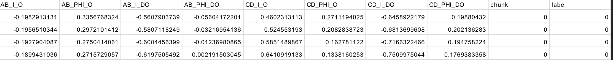
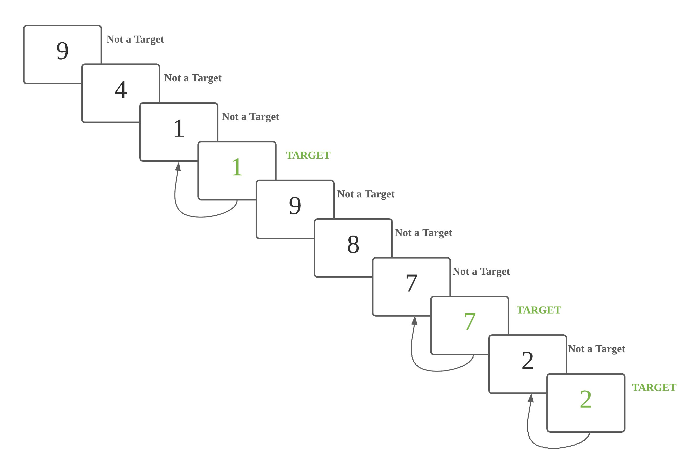
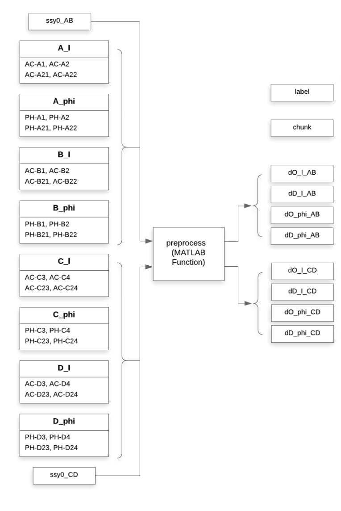
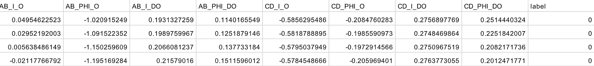

Project Motivation
We are interested in building brain computer interfaces (BCIs)
that would help out everyday computer users working at a desktop or
laptop. In our target future use case, a user would actively use
a keyboard and mouse as usual, but also wear a non-intrusive
headband sensor that would passively provide real-time measurements
of brain activity to the computer. Based on moment-to-moment estimates
of mental workload, the computer could adjust the interface to support the user.
Functional near-infrared spectroscopy (fNIRS) is a promising sensor technology
for achieving this goal of "everyday BCI". We have developed a prototype fNIRS
probe mounted on a headband that we used to collect this dataset.
Looking at the first decade of research on using fNIRS to estimate mental
workload, we have identified three barriers that stand in the way of
building effective mental workload classifiers using fNIRS data:
- The lack of available data.
Previous work typically collects proprietary datasets from only 10-30 subjects, often from very homogenous populations. Much larger, more heterogeneous open-access datasets are needed to build everyday BCI systems that work for many users. - The lack of standardized evaluation protocols.
Many previous efforts to build mental workload classifiers do not follow best practices in terms of dividing data into training and test sets in a way that allows reliable assessment of generalization potential (how well will this work for a new user?). For many works, it is not even clear how to reproduce their train/test splits. The release of a dataset should be accompanied by a standardized protocol, so that other teams can follow the very same experimental design, which makes results comparable and enables scientific progress. - The high cross-subject variability in fNIRS data.
Collected sensor data varies due to differences in individual physiology, sensor placement, and other sources of noise. It is important that datasets represent this diversity so that progress can be made in generalizing to new users and new sessions. - We release a large open-access dataset of 68 participants. This dataset is the largest known to us by a factor of 2.5.
- We provide a standardized protocol for evaluating classifiers and report benchmark results on our data under three paradigms of training: subject-specific, generic, and generic + fine-tuning. See our paper (opens new window)and code (opens new window)for details.
- We provide rich demographic information for each subject (age, gender, race, handedness) which enables auditing the "fairness" of fNIRS classifier performance across subpopulations. We view such audits as essential to make sure BCI works for everybody.
- Our dataset is targeted at everyday BCI. Our headband-mounted sensor is non-intrusive and easy to put on / take off when performing everyday tasks. It does not require a fabric cap covering the whole skull (like many alternatives) and does not require any complicated registration to landmarks.
Our project's contributions are:
Dataset Summary
For a complete dataset summary, see our public
Datasheet PDF
.
For each participant (68 recommended; 87 total), the dataset
contains the following records obtained during one 30-60 minute
experimental session. Each subject contributes just over 21 minutes
of fNIRS data from the desired n-back experimental conditions, with
remaining time related to rest or instruction periods.
-
fNIRS recordings
- A multivariate time-series representing brain activity throughout the session, recorded by a sensor probe placed on the forehead and secured via headband.
- All measurements are recorded at a regular sampling rate of 5.2 Hz.
- At each timestep, we record 8 real-valued measurements: combinations of oxygenated and deoxygenated hemoglobin, intensity and phase optical data, and two spatial locations. Units are micro-moles of hemoglobin per liter of tissue.
-
Activity labels
- Annotations of the experimental task activity performed throughout the session, including instruction, rest, and active segments.
- Each active segment is labeled as one of four n-back levels (0–3), reflecting increasing cognitive workload.
-
Demographics
- Includes participant age, gender, race, handedness, and other attributes.
- Enables performance analysis across subpopulations.
-
Activity performance
- Records correctness in working memory tasks (e.g., identifying matches from n steps ago).
- Supports data quality assessment and eligibility filtering.
Sliding window fNIRS data for classifiers
To improve analysis speed and reproducibility, we also make available a preprocessed version of the data that was used in all our reported experiments. We applied bandpass filtering to remove artifacts, and extracted sliding windows of length 30 seconds and stride 0.6 seconds (3 timesteps).
Per-subject CSV files containing the sliding window data using windows with 30-second duration and 0.6-second stride are available here :
Screenshot of the first few lines of the CSV from one subject's data:

Each row of the CSV file represents the fNIRS sensor measurements at one timestep.
There are 2 columns used as keys and labels:
chunk: indicating the index of the window (increments over time)label: indicating intensity level (0, 1, 2, or 3)
All rows with the same chunk id represent the time series for a specific
window. This window is the input to the classifier.
There are 8 measurement columns, used as features for machine learning classifiers:
- AB_I_O, AB_PHI_O, AB_I_DO, AB_PHI_DO
- CD_I_O, CD_PHI_O, CD_I_DO, CD_PHI_DO
Each column represents a measurement of hemoglobin concentration in the brain. Changes in oxygenation over time act as a proxy for mental workload intensity. Units are μmol/L (micromoles per liter).
The feature names indicate:
- Sensor location on the forehead (AB or CD)
- Optical measurement type (I = intensity, PHI = phase)
- Hemoglobin type (O = oxygenated, DO = deoxygenated)
Note: Our Box dataset also includes other window sizes (2, 5, 10, 20, 30, 40 seconds). We focus on 30-second windows as preferred.
Publications
The paper describing our dataset and benchmarks can be found here:
The Tufts fNIRS Mental Workload Dataset & Benchmark for Brain-Computer Interfaces that Generalize
Zhe Huang, Liang Wang, Giles Blaney, Christopher Slaughter, Devon McKeon, Ziyu Zhou, Robert Jacob, and Michael C. Hughes To appear in the Proceedings of Neural Information Processing Systems (NeurIPS 2021) Track on Datasets and Benchmarks , 2021
We are pleased to report that the paper describing our dataset and benchmarks was recently accepted for publication at the new Track on Datasets and Benchmarks happening at NeurIPS 2021. NeurIPS is a top-tier conference for machine learning research.
Please cite our papers if you find these datasets (fNIRS2MW-Visual and fNIRS2MW-Audio) useful:
@inproceedings{wang2021taming,
title={Taming fNIRS-based BCI input for better calibration and broader use},
author={Wang, Liang and Huang, Zhe and Zhou, Ziyu and McKeon, Devon and Blaney, Giles and Hughes, Michael C and Jacob, Robert JK},
booktitle={The 34th Annual ACM Symposium on User Interface Software and Technology},
pages={179--197},
year={2021}
}
@inproceedings{huangfNIRS2MW2021,
title = {The Tufts fNIRS Mental Workload Dataset & Benchmark for Brain-Computer Interfaces that Generalize},
booktitle = {Proceedings of the Neural Information Processing Systems (NeurIPS) Track on Datasets and Benchmarks},
author = {Huang, Zhe and Wang, Liang and Blaney, Giles and Slaughter, Christopher and McKeon, Devon and Zhou, Ziyu and Jacob, Robert J. K. and Hughes, Michael C.},
year = {2021},
url = {https://openreview.net/pdf?id=QzNHE7QHhut},
}
@inproceedings{wang2024empower,
title={Empower Real-World BCIs with NIRS-X: An Adaptive Learning Framework that Harnesses Unlabeled Brain Signals},
author={Wang, Liang and Zhang, Jiayan and Liu, Jinyang and McKeon, Devon and Brizan, David Guy and Blaney, Giles and Jacob, Robert JK},
booktitle={Proceedings of the 37th Annual ACM Symposium on User Interface Software and Technology},
pages={1--16},
year={2024}
}
Data Collection Procedures
IRB and COVID-19 Safety Approval
Procedures to collect data were approved by Tufts institution's
IRB (opens new window), and our deidentified dataset was approved
for public release (STUDY00000959). Each participant gave informed
written consent, and was compensated $20 US.
Because collection occurred during the COVID-19 pandemic in early 2021,
we also got approval from the Tufts Integrative Safety Committee (ISC).
We followed required sanitation and social distancing practices: experimenters
used personal protective equipment and disinfected the fNIRS probe for each subject.
Task Description
- Each participant completed 16 blocks of n-back trails (0→1→2→3→1→2→3→0→2→3→0→1→3→0→1→2).
- Each block is composed of 40 trails ( display for 0.5 seconds, hidden for 1.5 seconds).

Task Introduction
N-back video introduction: Before experiment started, the system played a short introductory video, showing an example of a user completing n-back tasks, with voice-over and caption explanations. Sample scripts for N-back task video are as below:
Today you will be completing a series of n-back tasks. You will be presented with many numbers, one after another. Some of these numbers will be targets. A number is a target if it is identical to the one shown n steps previously. Here is an example of a 2-back task. In this case, n = 2. The highlighted 8 is a target number, since the number 2 steps back is also 8. Your job will be to press the left arrow key each time you see one of these target numbers. If the number shown is not a target number, you should press the right arrow key.
Let’s view an example of a 0-back task. At the beginning of each task, you will hear a few beeps which indicate the start of the task. The current type of n-back task can be found at the top of the task window. In this example, n = 0. For the purposes of this demo only, the stack of numbers already shown is included beneath the task window. When n = 0, every number is a target, since every number is identical to the number 0 steps back. That is, every number is the same as itself. For 0-back, the participant presses the left arrow key after each number appears, and never presses the right arrow key.
Now let’s view an example of a 1-back task. The participant should press the right arrow key for all non-target numbers. When n = 1, a number is only a target if it is identical to the number 1 step back. Once the participant identifies a target number, they should press the left arrow key instead. For example, this 4 is a target number because the previous number was also 4. The participant should press the left arrow key, and then continue pressing the right arrow key until they see the next target number. Here is another target number. The number 1-step back was also 2, so the participant should press the left arrow key. During today’s experiment, the stack of already shown numbers will not be visible to you. It is your job to remember the numbers that were n-steps back so that you are able to identify the correct target numbers.
There will be 16 rounds in total. During each round, you will complete an n-bask task, where n is either 0, 1, 2, or 3. Before each task, there will be instructions reminding you how to find the target numbers for the current n. During the task, you will be shown 40 numbers. Each time you see a target number, you should press the left arrow key. For all non-target numbers, you should press the right arrow key. After each task, you will complete a survey. Once you have completed the survey, you will be able to rest for 20 seconds. The experiment will take approximately 40 minutes. After the entire experiment is finished, you will complete a short interview about your experience. Please remain seated and do not talk or adjust the headband while completing the experiment. However, if you do feel uncomfortable at any point, let the operator know and they will stop the experiment.
General introduction: Before each task, the system displayed a graphic depicting how to identify targets for the current n, with voice-over.
The graphic and sample scripts for 0-back are as below:

"This is a 0 back task. Every number is a target number."

"This is a 1 back task. A number is a target if it is identical to the previous number."

"This is a 2 back task. A number is a target if it is identical to the number 2 steps back."

"This is a 3 back task. A number is a target if it is identical to the number 3 steps back."
Data Structure
Our released dataset includes (Link to fNIRS2MW dataset):
- fNIRS measurements in fNIRS_data
- Supplementary data:
- Demographic and contextual information in pre-experiment
- Cognitive task performance in task_accuracy
- Experiment log in log
- Post-experiment interview in interview
- subjective workload in nasa-tlx
****************************************
** fNIRS2MW dataset folder structure **
****************************************
|-- qualified_subjects_list.pdf
|-- pre-experiment //
|-- experiment //
| |-- log //
| |-- task_accuracy //
| |-- fNIRS_data //
| | |-- raw_data //
| | |-- band_pass_filtered //
| | |-- whole_data //
| | |-- slide_window_data //
| | | |-- size_02sec_10ts_stride_03ts
| | | |-- size_05sec_25ts_stride_03ts
| | | |-- size_10sec_50ts_stride_03ts
| | | |-- size_20sec_100ts_stride_03ts
| | | |-- size_30sec_150ts_stride_03ts
| | | |-- size_40sec_200ts_stride_03ts
|-- post-experiment //
| |-- nasa-tlx //
| |-- interview //
| |-- * (all other folders) //
Data Format
We introduce and describe the data format of fNIRS data (raw and pre-processed) and supplementary data as below:
fNIRS Data
raw data
band pass filtered data
-
label: The label for each row.
- Values are in {0, 1, 2, 3}
- Same for all rows in the same chunk
-
chunk (Only in slide window data):
- Starts at 0
- Increases by 1
- Same for all rows in the same chunk
- AB_I_O, AB_I_DO: Intensity from detector AB
- CD_I_O, CD_I_DO: Intensity from detector CD
- AB_PHI_O, AB_PHI_DO: Phase from detector AB
- CD_PHI_O, CD_PHI_DO: Phase from detector CD
Whole data
Slide window data
- Window size:
10/25/50/100/150/200timestamps(2/5/10/20/30/40seconds) - Window stride:
3timestamps (rough0.6second)
68 participants were recruited, aged 18 to 44 years. None of the participants reported neurological or psychiatric conditions.
After pre-processing (Dual-slope and band pass filter), we have features/columns as below:

Each subject's .csv file includes continuous data of 16 tasks (exclude data during self-evaluation
(nasa-tlx) and rest period).

We offer pre processed data in :